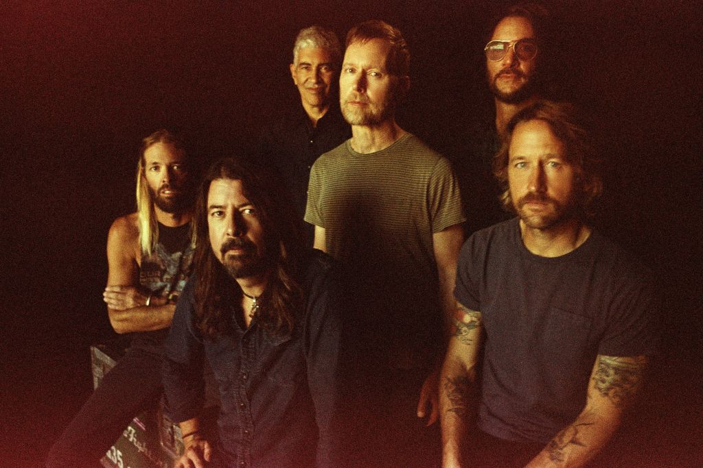
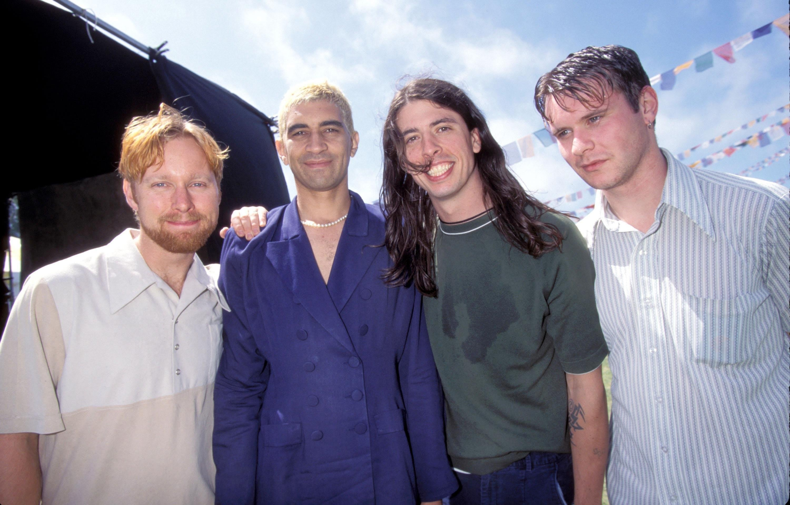
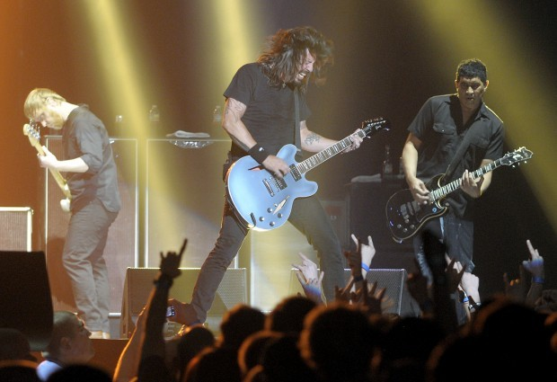
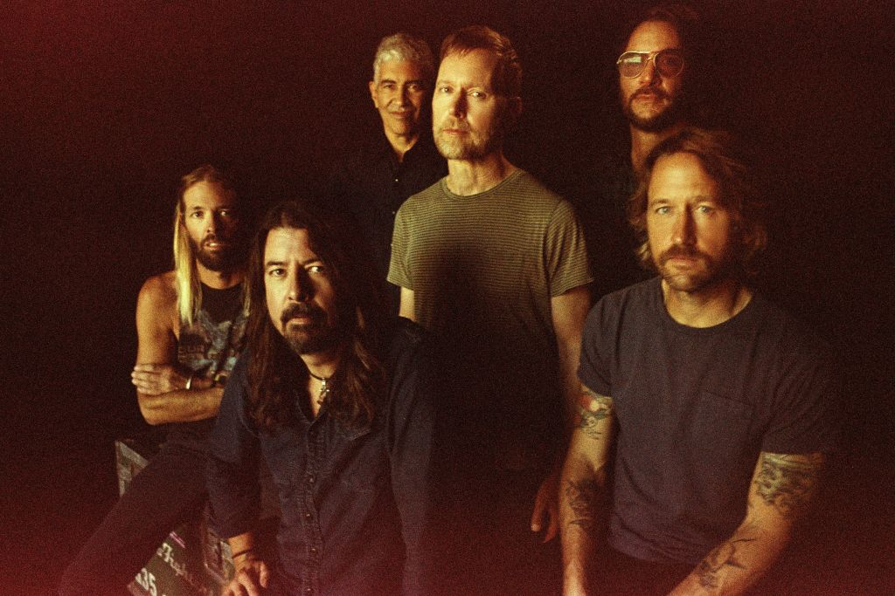
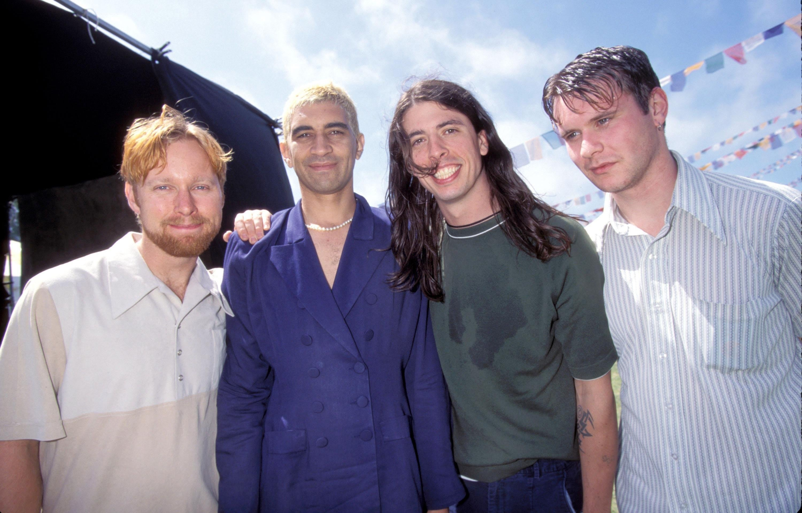
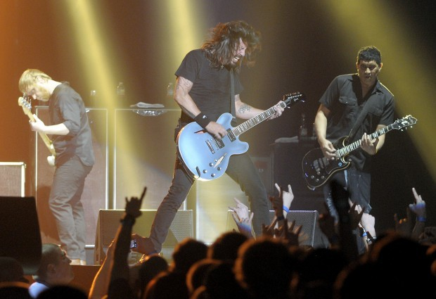

Pat
Smear
"A band's best and worst shows really aren't that far apart "
Early Life
Georg Ruthenberg was born on August 5th 1959, and raised in West Los Angeles, to a mother of African-American and Native American descent, and a German immigrant father. His parents forced him to take piano lessons at a young age, and a few years later, he began teaching himself to play the guitar. He lists his influences as Joan Jett, Brian James, Brian May, and Steve Jones.
As a teenager in 1977, Smear met Darby Crash, and together they formed The Germs with bassist Lorna Doom and drummer Dottie Danger (the pseudonym of Belinda Carlisle, who went on to front The Go-Go's).
Carlisle was soon replaced by Don Bolles and, in 1979, the band released their first album, (GI). Produced by Joan Jett, the record is now defined as a milestone in the history of punk rock. The Germs endured for one more year before finally disbanding in 1980 after Crash committed suicide. After The Germs, Smear had a brief stint as a member of punk band The Adolescents.
Following the demise of the Germs, Smear played in 1981 with ex-Screamers keyboardist Paul Roessler and his sister Kira in a band called Twisted Roots. Although short-lived, the band was the toast of the Hollywood punk scene. Smear would go on to play with Nina Hagen and make two solo albums of his own, Ruthensmear and So You Fell in Love with a Musician.... While working on Breakin, Smear became friends with Courtney Love.
Nirvana
In 1993, he received a call from Nirvana's frontman Kurt Cobain, asking him to join his band. Smear at first thought that it was his friend, Carlos "Cake" Nunez, playing a joke on him; however, Courtney Love had told Smear a few days prior that Cobain was going to call him. Smear accepted immediately and played his first show with Nirvana on Saturday Night Live on September 25, 1993. He toured with Nirvana for about six months, and also appears on their albums MTV Unplugged in New York, From the Muddy Banks of the Wishkah, Nirvana (album), and With The Lights Out.
Smear's time with Nirvana, which brought him his first mass audience exposure, came to an end with Cobain's death in April 1994.
Foo Fighters
Following Cobain's death, Nirvana drummer Dave Grohl formed a band to support his self-titled album, the first effort from the band which would become known as Foo Fighters. Smear joined the group from its inception, but because the band's first album was a collection of demos recorded solely by Grohl, Smear did not appear on a Foo Fighters album until 1997's The Colour and the Shape. Later that year, Smear quit the band: he announced his departure during a live performance atop Radio City Music Hall (introducing his replacement Franz Stahl), right before that year's MTV Video Music Awards.
During his absence from Foo Fighters, Smear kept a fairly low profile, producing the band Harlow's debut album and making scattered television appearances.
He has been employed as a creative consultant in a motion picture about the Germs and Darby Crash, entitled What We Do Is Secret, after one of the band's best-known songs. The film was released at the Los Angeles Film Festival on June 23, 2007, and had a limited theatrical release in 2008. It is now available on DVD. In the film, he is depicted by actor Rick Gonzalez.
In 2005, he began performing reunion shows with The Germs, with actor Shane West (who portrays Darby Crash in the film) filling in as lead vocalist.
The previously unrecorded Germs song, "Golden Boys", which is on Smear's 1988 SST album Ruthensmear, originally appeared on the soundtrack of an early cut of the 2007 film Cthulhu, but the producers replaced it due to rights issues.
In late 2005, Smear began performing selected shows with Foo Fighters again. He would continue to play intermittently with the group, often not for the entirety of a concert, before fully rejoining in 2010 and participating in the recording of what would become the album Wasting Light. He would go on to record with the rest of the band on their 8th studio album, Sonic Highways.
In late 2005, Smear began performing selected shows with Foo Fighters again. He would continue to play intermittently with the group, often not for the entirety of a concert, before fully rejoining in 2010 and participating in the recording of what would become the album Wasting Light. He would go on to record with the rest of the band on their 8th studio album, Sonic Highways.


 




